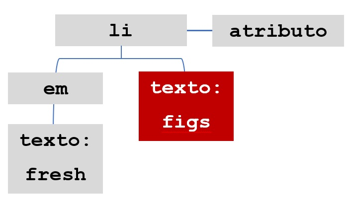

§ Clique no botão para obter o nodeValue:
Ver diagrama abaixo:

document.getElementById("one").firstChild.nextSibling.nodeValue;
1. O nó do elemento li é selecinado usnado o método getElementById;
2. O primeiro filho de li é o elemento em;
3. O nó de texto é o próximo irmão deste elemento em. Nota: este, também é o último filho.
4. Você já tem o no de texto e pode acessar seu conteúdo com nodValue.